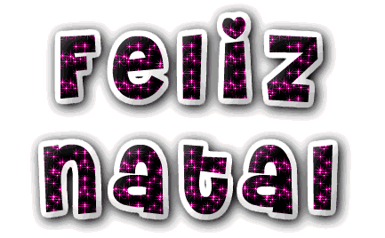
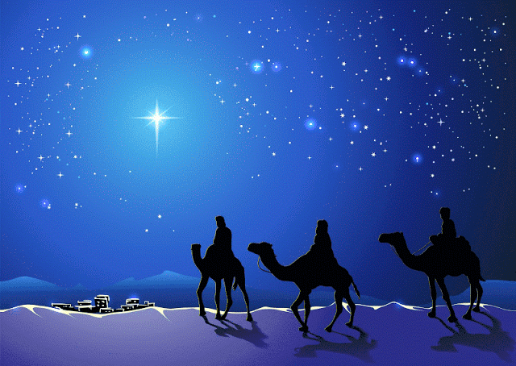

Precisamos conhecer um pouco acerca do conceito de Natal
- De onde vem o Natal?
- Há algum sentido celebrar o Natal?
- Como comemorar o natal da forma correta?
- Reflexão

De onde vem isso?
De onde vem o Natal?
O Natal teve origem em festas pagãs que eram realizadas na antiguidade.
Nessa data, os romanos celebravam a chegada do inverno (solstício de inverno). Eles cultuavam o Deus Sol (natalis invicti Solis),
e ainda realizavam dias de festividades com o intuito de renovação.
Outros povos da antiguidade também celebravam a data, seja pela chegada do inverno ou pela passagem do tempo.
É o caso dos mesopotâmicos, que celebravam o “Zagmuk”, uma festa pagã em que um homem era escolhido para ser sacrificado.
Isso porque eles acreditavam que no final do ano alguns monstros despertavam.
A partir do século IV, e com a consolidação do Cristianismo, a festividade foi oficializada como Natale Domini (Natal do Senhor).
Como não se sabe ao certo o dia em que Jesus nasceu, essa foi uma forma de cristianizar as festas pagãs romanas, dando-lhes uma nova simbologia.
Por que o Natal é comemorado em 25 de dezembro - Rodrigo Siva

Há algum sentido em celebrar o Natal?
O Natal é celebrado no dia 25 de dezembro, a data é uma comemoração cristã que relembra o nascimento de Jesus Cristo.
Esperança e tempo de renovação fazem parte do espírito natalino.
O Natal traz para muita gente, um desejo de fechamento e início de ciclos.
A comemoração do natal, dentro do contexto da relembrança do nascimento de Cristo, é tempo de reflexão e confraternização.
Precisamos ter em mente alguns pontos importantes...
Como comemorar o Natal da forma correta?
Certamente Jesus não nasceu no dia 25 de Dezembro, isto é um fato inegável.
Mas supormos que seja errado utilizar essa data para comemorar o nascimento do Mestre, para falar do seu amor e salvação
(esse deve ser o motivo principal de fazermos uso da data) talvez seja um pouco de extremismo de nossa parte.
Digo isso porque no dia 25 de Dezembro é o momento no qual os corações se tornam mais sensíveis, e as pessoas estão mais dispostas a ouvir acerca de Jesus,
pois o espírito de natal contagia a todos. Por isso, temos de aproveitar essa oportunidade.
Como falar do natal para as cianças? Contexto histórico do Natal

Uma Reflexão Importante...
A principal mensagem de Natal é a de um Deus Humano que passou por aqui e nos
ensinou com os seus exemplos de vida o significado das
palavras perdão, justiça, amizade, renovação, força, coragem, partilha, consciência,
entre outras que deveriam compor o significado da palavra humanidade.
É um legado que renova os nossos corações todos os anos nesta data especial.
Que neste Natal, os nossos corações se renovem no amor de Deus, que tenhamos novas chances de viver
de forma intensa o amor em todas as suas manifestações.
Que Deus nos presenteie com o discernimento pra que possamos deixar na história deste
ano que passou o que deve ficar, e levar pra o próximo ano que deve continuar a escrever as nossas linhas.
"Que DEUS, o intenso verbo SER, seja conjugado em cada respiração, em cada pensamento, em cada ato,
em cada palavra de cada UM de nós, agora, no próximo ano, e para todo o sempre!"
Rosicleide David